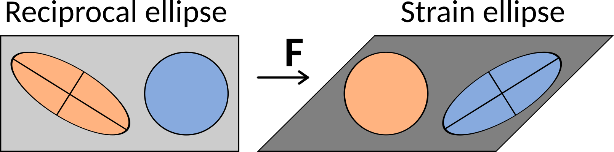
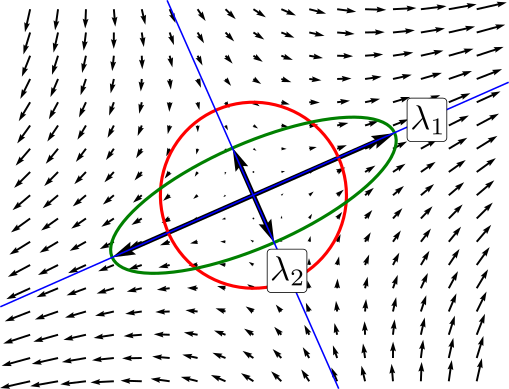

Finite strain
Contents
---------------------------------------------------------------------------
ModuleNotFoundError Traceback (most recent call last)
Cell In [1], line 3
1 import numpy as np
2 import matplotlib.pyplot as plt
----> 3 from apsg import *
4 from strain2d import plot_defgrad
ModuleNotFoundError: No module named 'apsg'
Finite strain#
A strain analysis consists in quantifying the changes in shape and size due to deformation. The strain analysis involves determining the orientation of principal strains and their magnitudes. The finite strain is the measurable parameter that assigns a quantity to the total change in the shape of a deformed object compared to its original shape. In practice, dilatation is very difficult to measure so that geologists usually speak of strain for distortion only. One way of describing deformation is to use a strain ellipse or ellipsoid. If you start out with a perfectly circular or spherical feature, after it has been deformed it will form an ellipse or ellipsoid. In general a preexisting line will have been both stretched and rotated. However, for any strain ellipse/ellipsoid there are two/three, perpendicular directions in which lines undergo stretching but no rotation. These directions are called the principal strain axes and are a fundamental concept in structural geology.
Deformation tensors#
According to definition, the strain ellipse or ellipsoid results from transformation of unit circle or sphere, which in matrix form is given by equation:
or in 3D
In general for both 2D and 3D we can write both equations as:
Substituting equation for deformation gradient \(X=\boldsymbol{F}^{-1}x\) into equation of unit circle or sphere in undeformed coordinates we obtain:
where matrix \(\boldsymbol{B}=\boldsymbol{F}\cdot\boldsymbol{F}^T\) is called Finger or Left Cauchy-Green deformation tensor. It’s inverse \(\boldsymbol{B}^{-1}\) represents ellipse or ellipsoid and is commonly called ellipsoid tensor or Cauchy deformation tensor.
According to definition, the reciprocal ellipse is transformed to unit circle or sphere, which in matrix form is given by equation:
Substituting equation for deformation gradient \(x=\boldsymbol{F}X\) into equation of unit circle or sphere in deformed coordinates we obtain:
where matrix \(\boldsymbol{C}=\boldsymbol{F}^T\cdot\boldsymbol{F}\) is called Green’s or Right Cauchy-Green deformation tensor.
{kind=link}
Strain ellipse or ellipsoid#
Plugging the polar decomposition into equations for above defined deformation tensors gives a rather surprising results.
Substituting deformation gradient in Left Cauchy-Green deformation tensor by left polar decomposition \(\boldsymbol{F} = \boldsymbol{V} \cdot \boldsymbol{R}\) gives:
Substituting deformation gradient in Right Cauchy-Green deformation tensor by right polar decomposition \(\boldsymbol{F} = \boldsymbol{R} \cdot \boldsymbol{U}\) gives:
As both \(\boldsymbol{U}\) and \(\boldsymbol{V}\) are symmetric, so \(\boldsymbol{U}=\boldsymbol{U}^T\) and \(\boldsymbol{U}^T \cdot \boldsymbol{U}=\boldsymbol{U} \cdot \boldsymbol{U}\). Likewise \(\boldsymbol{V}=\boldsymbol{V}^T\) and \(\boldsymbol{V} \cdot \boldsymbol{V}^T=\boldsymbol{V} \cdot \boldsymbol{V}\). Finally, \(\boldsymbol{U} \cdot \boldsymbol{U}\) is sometimes written as \(\boldsymbol{U}^2\) and \(\boldsymbol{V} \cdot \boldsymbol{V}\) is sometimes written as \(\boldsymbol{V}^2\). Therefore:
The important result here is that the rotational component of deformation represented by rotation matrix \(\boldsymbol{R}\), is eliminated in both cases, i.e. the deformation tensors represents only stretching component. Therefore we can use them to find principal strain axes for both final and reciprocal strains.
Eigenvalues and eigenvectors of deformation tensors#
We can use matrix algebra to find principal strain axes. To do so we have to talk about eigenvectors and eigenvalues. Square matrices have so-called eigenvectors associated with them. An eigenvector is a vector which gets squeezed or stretched, but not rotated, when operated on by the matrix. The amount of squeezing or stretching (the strain) is called the eigenvalue. There is a single, fundamental equation in eigenanalysis:
where \(\boldsymbol{B}\) is a square matrix (here Finger deformation tensor), \(x\) is an eigenvector of \(\boldsymbol{B}\) and \(\lambda\) is the associated eigenvalue. \(\lambda\) is a scalar, so the equation tells us that applying \(\boldsymbol{B}\) to its eigenvectors does not alter their directions, but only scales their lengths. In structural geology, the eigenvectors are the principal strain axes associated with that deformation, and the eigenvalues are the associated quadratic elongations (Note that deformation tensor is a second power of stretching tensor).
{kind=link}
To find the eigenvectors and eigenvalues, we rewrite the above equation as:
where \(\boldsymbol{I}\) is the identity matrix and \(\boldsymbol{0}\) is the zero vector.
This homogeneous system of equations have a nonzero solution \(x\) if and only if the determinant of the matrix \((\boldsymbol{B} - \lambda \boldsymbol{I})\) is zero. Therefore, the eigenvalues of \(\boldsymbol{B}\) are values of \(\lambda\) that satisfy the equation:
Using rule for the determinant, the left-hand side is a polynomial function of the variable \(\lambda\) and the degree of this polynomial is \(n\), the order of the matrix \(\boldsymbol{B}\). This polynomial is called the characteristic polynomial of matrix and the equation above is called the characteristic equation of matrix. It can be factored into the product of n linear terms:
The numbers \(\lambda_1, \lambda_2,\cdots\lambda_n\) are roots of the polynomial and are the eigenvalues of matrix.
Example
Consider the deformation gradient matrix:
the Finger tensor \(\boldsymbol{B}\) is therefore:
leading us to characteristic polynomial:
It has roots \(\lambda_1=4\) and \(\lambda_2=0.25\), which are the two eigenvalues of \(\boldsymbol{B}\).
To find eigenvectors, we need substitute eingevalues into equation \((\boldsymbol{B} - \lambda \boldsymbol{I})x = 0\). For \(\lambda_1=4\), it becomes:
These are two linearly dependent equations, so any vector \(x\) with \(x_1 = x_2\) solves this equation. All these vectors are linearly depended, so usually unit vector representing this orientation is eigenvector of \(\boldsymbol{B}\).
Similarly, for \(\lambda_1=0.25\), it becomes:
These are two linearly dependent equations, so any vector \(x\) with \(x_1 = -x_2\) solves this equation. All these vectors are linearly depended, so usually unit vector representing this orientation is eigenvector of \(\boldsymbol{B}\).